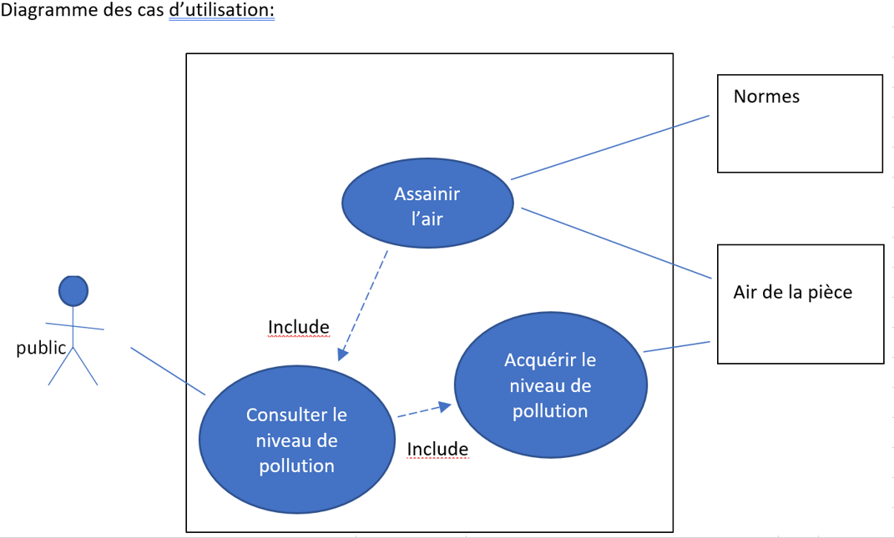
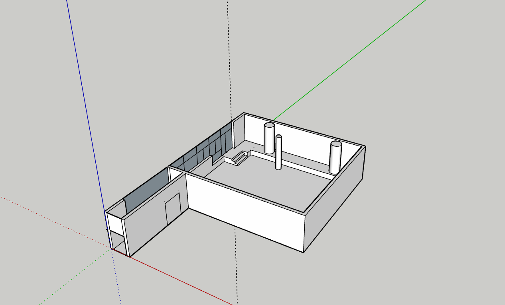
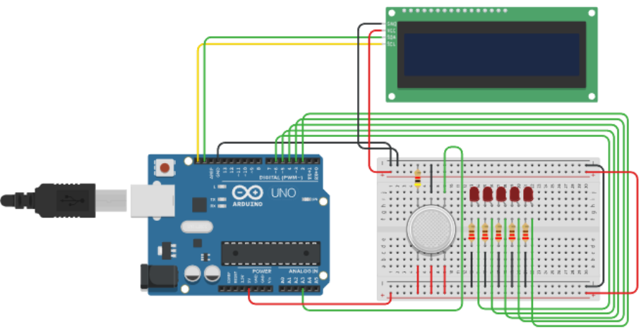
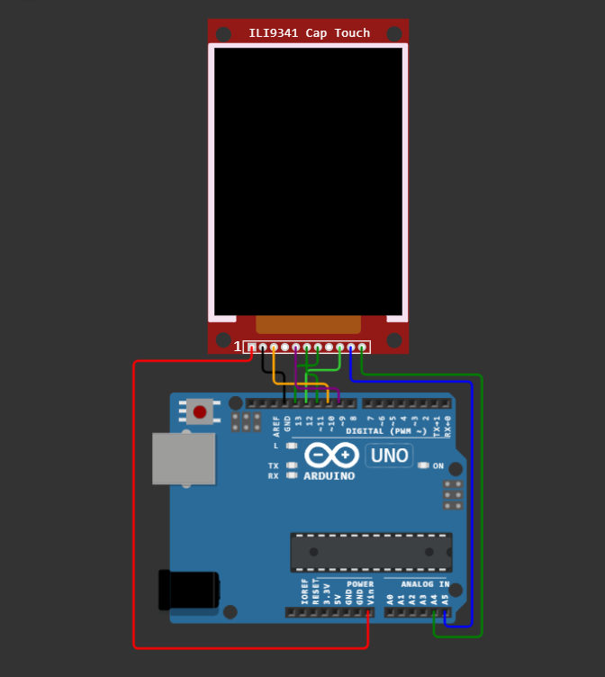

Sequence Diagram :

Science and Technology of Industry and Sustainable Development
The STI2D track is aimed at high school students interested in technological innovation. It prepares students for higher education, particularly in industrial, scientific, or technological fields.
I specialized in SIN (Information and Digital Systems).
We explored electronic systems, computer networks, delved into programming, and finally worked on digital data processing.
In summary, we learned numeration (binary, octal, hexadecimal, etc.), C#, and Python. We studied electronics (transistors, sensors, etc.), project organization using various software tools, 3D modeling, and circuit simulation. We also covered everything related to networks, electrical signals, filters, as well as object design and large-scale projects.
In STI2D, we learned to master industrial tools and processes by working on concrete group projects, integrating our technical knowledge.
In my final year, my project was to create a "pollumeter," a device designed to measure pollution levels and display the results on a device. The goal was to prevent excessive pollution levels by connecting this device to a ventilation system (VMC) or an automated system to open a window.
For this project, we worked independently through the following stages:
Sequence Diagram :
Block Definition Diagram :

Use Case Diagram :
Requirement Diagram :

3D Plan :
Case Model :

First CO2 Sensor :
Second CO2 Sensor :

Particle Sensor :

Humidity Sensor :

Temperature Sensor :

HMI (Human-Machine Interface) :
CO2 Sensor :

CO2 Sensor with LCD Screen :

École 42 is a computer science institution aimed at training developers and IT professionals capable of tackling the challenges of the digital world. It emphasizes self-learning, collaboration, and creativity to prepare its students for diverse careers: software development, cybersecurity, data science, artificial intelligence, and more.
School 42 is ranked the 6th most innovative school in the world, even ahead of Harvard University.
I only participated in the 42 pool for one month, but that month taught me a lot.
During this month, we worked intensively, learning the basics of the C programming language.
The working method is as follows :

Here is the GitHub link to the projects completed during the 42 pool
https://github.com/NolanHoarau/42_piscine